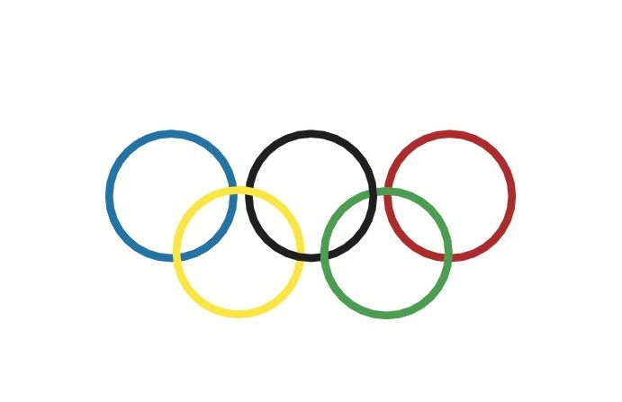

Олимпийская эмблема
Что значат кольца на олимпийской эмблеме?
Из всех существующих версий, самой правильной считается та, которая
гласит о связи каждого олимпийского кольца с определенным континентом:
Переплетенные кольца на белом фоне — символика олимпиады, привычная и
давно определенная. Считается, что пять колец олицетворяют континенты,
принимающие участие в олимпийском движении: Европа, Азия, Америка (оба
материка), Африка, Океания (включая Австралию). Белый фон означает
мирное время проведения олимпиад.
Синий цвет символизирует Европу. Это связано с цветами флага
Франции, страны, где были проведены первые современные Олимпийские
игры.
Черный цвет представляет Африку. Этот выбор обусловлен цветами флага
Эфиопии, единственной африканской страны, которая в то время была
независимой.
Красный цвет представляет Америку. Он связан с цветами флага США,
страны, которая в то время также была одной из ведущих участниц
Олимпийских игр.
Желтый цвет представляет Азию. Это выбрано в связи с цветами флага
Японии, страны, которая была выбрана организатором Олимпийских игр
1940 года (хотя они были отменены из-за Второй мировой войны).
Зеленый цвет символизирует Океанию. Это выбрано в связи с цветами
флага Австралии, представляя тем самым Австралию и другие страны
Океании.